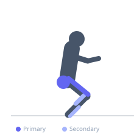
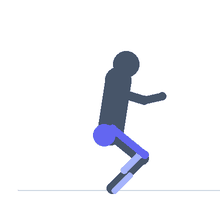

Exercise guide / Single-Leg Squat on BOSU Ball
Single-Leg Squat on BOSU Ball
A single-leg squat performed on the dome of a BOSU ball (dome side up), combining the balance challenge of the unstable dome surface with the unilateral loading of a single-leg squat. This requires simultaneous control of balance, knee alignment, hip stability, and ankle proprioception on an unstable surface. Used in advanced rehabilitation programs and sport-specific balance training for athletes requiring single-leg stability under load.
Primary muscles
rectus femoris
vastus medialis
gluteus maximus
Secondary muscles
gluteus medius
soleus
tibialis anterior
Stabilizers
transverse abdominis
Equipment
No Equipment (Bodyweight)


Starting position
- Step onto the center of the BOSU dome with one foot. Lift the other foot off the dome. Establish balance with the eyes open and a wall or bar within reach.
Setup
- Master bilateral BOSU squats and single-leg floor squats before combining them. Have a safety surface or partner nearby at all times.
Steps
- Step 1: Stand on the BOSU dome on one foot. Find balance.
- Step 2: Slowly descend into a single-leg squat, allowing the BOSU to respond to the balance shifts.
- Step 3: Descend to 60-70 degrees of knee flexion with the knee tracking over the second toe.
- Step 4: Drive through the foot to return to standing. Repeat, then switch sides.
Coaching cues
- Push the knee out over the second toe — no knee cave
- Let the ankle respond to the dome — do not stiffen the ankle to prevent wobble
- Focus on a fixed point ahead for balance
Breathing
- Inhale as you descend. Exhale as you drive up.
Range of motion
- 60-70 degrees of knee flexion is the target initially. Full depth only when balance and strength allow.
Tempo
- 3s eccentric, 1s pause at bottom, 2s concentric return.
Common mistakes
- Knee caving inward (valgus) during the descent — drive the knee out over the second toe
- Not controlling the BOSU wobble — the ankle must actively manage the instability
- Using too deep a squat before the balance and strength are adequate
Safety
- ALWAYS have a safety surface within reach — a wall, rack, or partner
- Do not attempt without first mastering bilateral BOSU squats and single-leg floor squats
- If knee pain occurs during the descent, reduce depth
Training
- strength: 4–8 reps
- strength: 2–3 sets
- Rest: {'strength': 60}